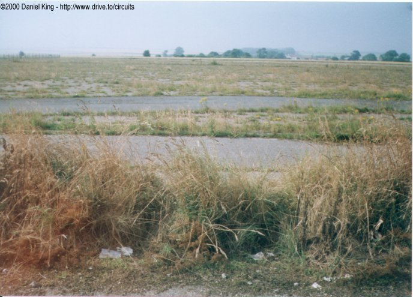
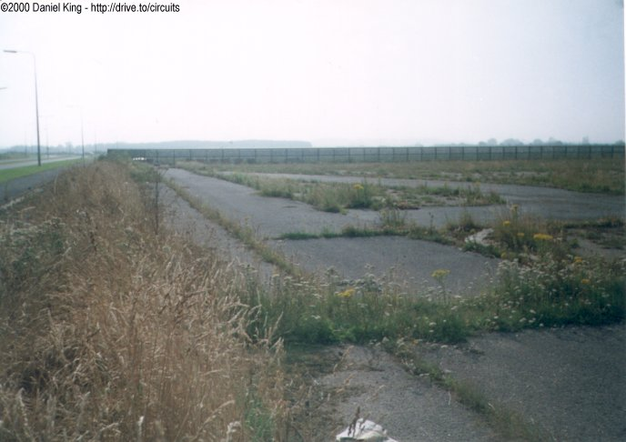
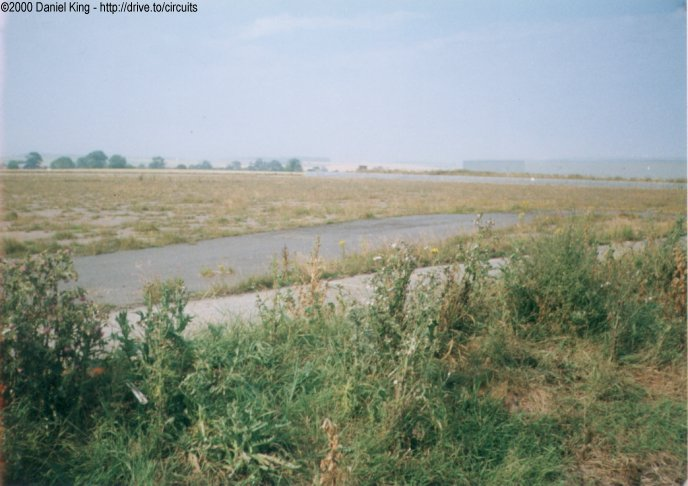
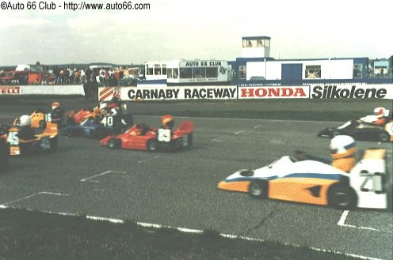
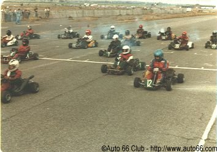

Numbers indicate where the pictures were taken. Click links above.
Pits & Starting Grid
|| Contents | 1 | 2 | 3 | 4 | 5 | 6 | Home ||
Numbers indicate where the pictures were taken. Click links
above.
| As these photographs show, the paddock access road as well as the markings of the start/finish line and grid are still intact. The left-hand side of the circuit has been covered by an overgrown banking of earth during construction of a pavement and road after the circuit was sold for industrial development. As with most parts of the circuit, weeds hae taken root in areas were the track surface has degraded over time. |



| The two photographs below show the start/finish area while the circuit was in operation. These images were provided by the Auto 66 Club who owned the circuit during its active period. |

